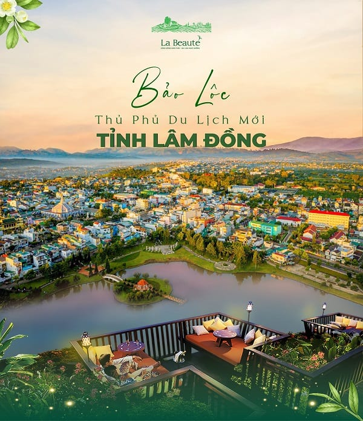

Giới thiệu về Bảo Lộc: Cao nguyên xinh đẹp giữa lòng Tây Nguyên
- Vị trí địa lý Bảo lộc: Thành phố Bảo Lộc nằm ở phía tây nam tỉnh Lâm Đồng, phía Tây Nam giáp với huyện Đạ Huoai và phần còn lại của Bảo Lộc giáp với huyện Bảo Lâm. Tổng diện tích của thành phố hiện nay là 23.256 ha, chiếm 2,38% diện tích của tỉnh Lâm Đồng.
- Khí hậu:
Dù nằm trong khu vực khí hậu nhiệt đới nhưng với độ cao trên 800m, khí hậu ở thành phố Bảo Lộc mang nhiều nét tương đồng với thành phố Đà Lạt với nhiệt độ trung bình cả năm là 21-22 độ C, nhiệt độ cao nhất là 27,4 độ C, nhiệt độ thấp nhất trong năm là 16,6 độ C. Độ ẩm trung bình là từ 80-90%. Có nhiều ngày trời sương mù có cường độ mưa lớn tạo nên nét đặc trưng riêng của thành phố Bảo Lộc.
